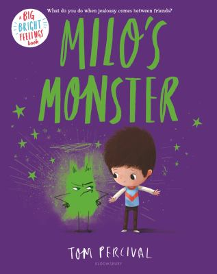

A List of Children's Picture Book | Week 2
Week
| Image | Name | Author | Rate | Price | Read Date |
 | Milo’s Monster | Percival, Tom | ⭐️⭐️⭐️⭐️⭐️ | 23.99 | May 1, 2026 |
 | Olive & Pekoe - In Four Short Walks | Davis, Jacky | ⭐️⭐️⭐️ | 21.99 | May 1, 2026 |
 | Frankie's Favorite Food | Garrity-Riley, Kelsey | ⭐️⭐️⭐️⭐️ | 21.99 | May 1, 2026 |
 | The Love Letter | Denise, Anika | ⭐️⭐️⭐️⭐️ | 21.99 | May 2, 2026 |
 | Stella, Queen of the Snow | Gay, Marie-Louise | ⭐️⭐️⭐️⭐️⭐️ | 15.95 | May 2, 2026 |
 | Stella, Star of the sea | Gay, Marie-Louise | ⭐️⭐️⭐️⭐️⭐️ | 7.95 | May 2, 2026 |
 | A sick Day for Amos McGee | Stead, Philip Christian | ⭐️⭐️⭐️⭐️ | 19.99 | May 3, 2026 |
 | A Child of Books | Jeffers, Oliver | ⭐️⭐️⭐️⭐️ | 22.00 | May 3, 2026 |
 | The Snow Lion | Helmore, Jim | ⭐️⭐️⭐️⭐️ | 23.95 | May 3, 2026 |
| ⭐️⭐️⭐️ | |||||
| ⭐️⭐️⭐️⭐️ | |||||
| ⭐️⭐️⭐️⭐️ | |||||
| ⭐️⭐️⭐️⭐️ | |||||
| ⭐️⭐️⭐️⭐️⭐️ | |||||
| ⭐️⭐️⭐️⭐️⭐️ | |||||
| ⭐️⭐️⭐️⭐️⭐️ | |||||
| ⭐️⭐️⭐️⭐️⭐️ | |||||
| ⭐️⭐️⭐️ | |||||
| ⭐️⭐️⭐️⭐️⭐️ | |||||
| ⭐️⭐️⭐️⭐️⭐️ | |||||
| ⭐️⭐️⭐️⭐️ |